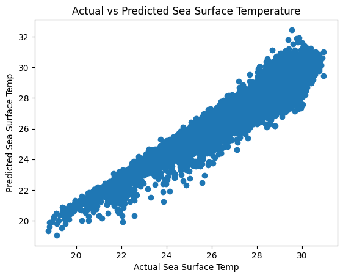

Our objective was to gain insights into the factors influencing sea surface temperature. To achieve this, we employed a Linear Regression model, utilizing a dataset containing various environmental variables.
Our regression model enables the prediction of sea surface temperature based on the provided environmental variables. This has practical applications for forecasting temperatures on future dates.
By analyzing the regression coefficients, we can identify which environmental variables have a significant impact on sea surface temperature. This knowledge helps discern the key factors influencing temperature variations.
The coefficients in the linear regression model provide insights into the strength and direction of influence of each predictor on sea surface temperature. This enhances our understanding of the relationships between different environmental factors and temperature.
Regression analysis allows us to uncover patterns and trends in the data. We explored how changes in zonal winds, meridional winds, and other variables correlate with changes in sea surface temperature.
To aid in interpretation, we created a scatter plot comparing the actual sea surface temperatures with the predicted values from our regression model. This plot visually represents how well our model aligns with the observed data.
The Mean Squared Error (MSE) for the linear regression model is approximately 0.3156. The MSE is a measure of the average squared differences between the actual and predicted values. In this context, a lower MSE indicates a better fit of the model to the data.